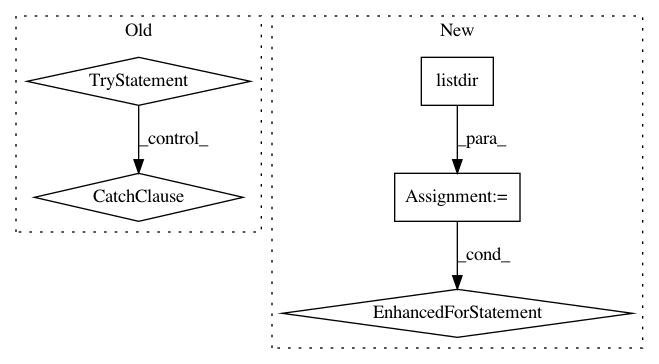

93799ac3f4183b6dcd55cccf9655ae6e4c80849b,utils.py,,create_dir_and_delete_content,#Any#,20
Before Change
def create_dir_and_delete_content(directory):
try:
shutil.rmtree(directory, ignore_errors=True)
except:
pass
os.makedirs(directory, exist_ok=True)
After Change
def create_dir_and_delete_content(directory):
os.makedirs(directory, exist_ok=True)
files = sorted(filter(os.path.isfile, map(lambda f: os.path.join(directory, f), os.listdir(directory))),
key=os.path.getmtime)
// delete all but most current file to assure the latest model is availabel even if process is killed
for file in files[:-1]:
print("removing old model: {}".format(file))
os.remove(file)
In pattern: SUPERPATTERN
Frequency: 3
Non-data size: 5
Instances
Project Name: philipperemy/deep-speaker
Commit Name: 93799ac3f4183b6dcd55cccf9655ae6e4c80849b
Time: 2017-12-02
Author: daniel-schreiber@gmx.de
File Name: utils.py
Class Name:
Method Name: create_dir_and_delete_content
Project Name: theislab/scanpy
Commit Name: 3e8c80ed9857631d6ce5d1adb35f451b9f780cb7
Time: 2017-02-28
Author: f.alex.wolf@gmx.de
File Name: scanpy/examples/__init__.py
Class Name:
Method Name: get_example
Project Name: uber/ludwig
Commit Name: a1a6b7db4b2f751b6f6be9adfb452b200c9a3ee7
Time: 2020-09-20
Author: jimthompson5802@gmail.com
File Name: examples/titanic/simple_model_training.py
Class Name:
Method Name: